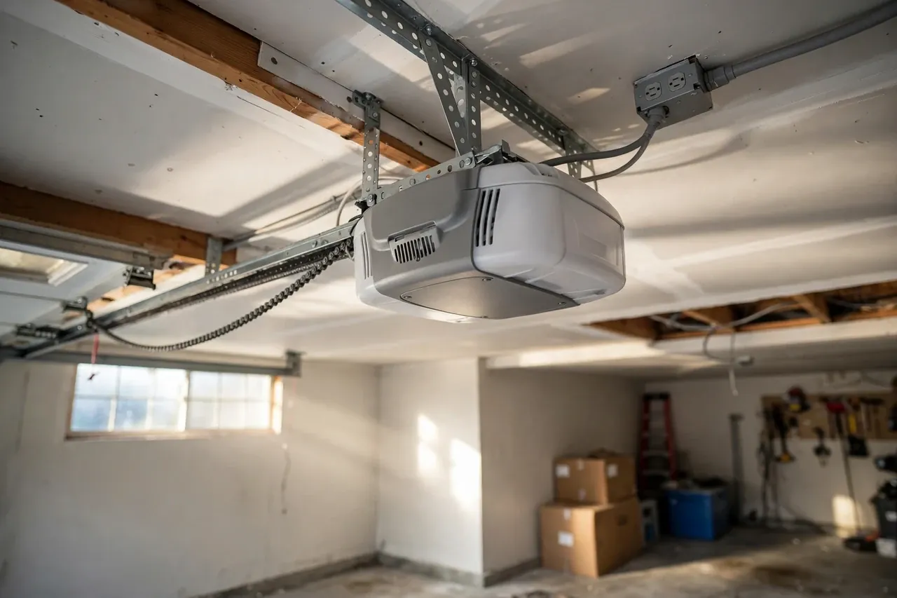
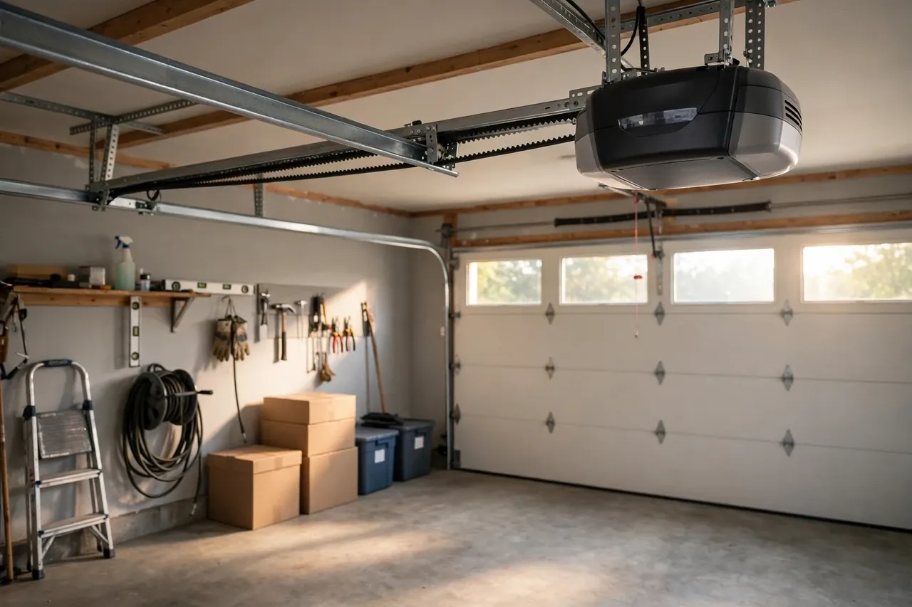

About Milwaukee Garage Doors Inc in Zion, IL
Milwaukee Garage Doors Inc is a garage door supplier in Zion, Illinois, at 2016 Horizon Ct, Zion, IL 60099. The company is open 24 hours, every day, and phone is the only contact channel: (224) 842-7761.
About the company
A Garage Door Supplier in Zion, IL
Milwaukee Garage Doors Inc is a garage door supplier based in Zion, in Lake County, Illinois. The company works on garage doors across the city: repair for doors that are not working, installation and replacement for whole new doors, and maintenance to keep doors running.
Zion's housing shapes the work. Most homes were built before 2000, and the city mixes alley-loaded detached garages in the older eastern and central grid with attached, garage-forward homes in the 1990s and later western subdivisions. Each area page on this site describes the pattern for one part of Zion.

Practical standards, local accountability.
Milwaukee Garage Doors IncWhat guides the work
Our Mission
The aim is straightforward: garage doors in Zion that open, close, and stay safe to use, with the work described plainly before it starts and the safety checks run when it is done. Sensors and auto-reverse are tested regularly.
Our values
What We Stand For
Four points guide how the company describes its work on this site.
Plain descriptions
Safety checks
Zion area by area
Open 24 hours
The crew
The Crew Behind the Work
The crew works on garage doors across Zion: springs, cables, rollers, tracks, panels, and openers. No individual team members are named on this site. To reach the crew, call (224) 842-7761 — phone is the only contact channel, and the company is open 24 hours, every day.

Ways we can help
Garage Door Services In Zion
Eight services cover the door, the opener, and the hardware that connects them. Three are shown here; the services page lists all eight, each with its own page.
Explore every service01
Garage Door Installation & Replacement
A whole new door: materials, styles, insulation, and fitting, including what happens to the existing door and opener.
View service 02Garage Door Repair
General repair for doors that stick, slam, grind, or stop halfway, covering springs, cables, rollers, tracks, panels, and openers.
View service 03Garage Door Opener Repair & Installation
Opener repair, new opener installation, remotes and keypads, safety sensors, and smart and Wi-Fi upgrades.
View serviceNotes from local customers
What Customers Say About the Work
The crew was proficient and competent, and they made my garage seem better than before.
Premium components were used to rebuild my garage door for reasonably low running cost.
I had a thorough safety check on my garage door, the technician was very detailed.
Excellent service, my garage door works perfectly again.
Me and my family wanted to upgrade the insulation in our garage door and they fixed it immediately.
Where we work
One Company, Twenty-Two Zion Areas.
Central ZionSouth Central ZionBeulah ParkJoannaHermonKedron ParkWest ZionHarbor RidgeShepherds CrossingLorelei AcresStonebridge CrossingSunset RidgeCypress ParkCountrywood HillsBrighton PondsButterfield PlaceWestside HillsHighland MeadowsSheridan HillsSheridan LakeSheridan Lake ViewBartletts North Shore Acres
View all areasBefore the visit
Questions About Milwaukee Garage Doors Inc
Common questions about Milwaukee Garage Doors Inc, answered in general terms. For a specific door, call (224) 842-7761.
Still wondering?(224) 842-7761
Milwaukee Garage Doors Inc is at 2016 Horizon Ct, Zion, IL 60099, United States, in Zion, Illinois. The map on the homepage shows the location.
Milwaukee Garage Doors Inc is open 24 hours, every day.
By phone: call (224) 842-7761. No contact form or email address is published on this site; phone is the only contact channel listed here.
Twenty-two areas across Zion, from Central Zion and South Central Zion in the older grid to the western subdivisions such as Harbor Ridge, Shepherds Crossing, and Sunset Ridge. Each area has its own page, linked from the locations page.
Federal rules (16 CFR Part 1211, UL 325) require residential automatic garage door operators to have entrapment protection: an inherent reversal system plus a secondary entrapment protection device (such as photoelectric sensors or an edge sensor) or a constant-contact control. Test sensors and auto-reverse regularly.
Ready to call?
Call Milwaukee Garage Doors Inc in Zion
A broken spring, a dead opener, or a door that will not close: call (224) 842-7761. Open 24 hours, every day.
Start with the basics
Call Milwaukee Garage Doors Inc
Reach Milwaukee Garage Doors Inc at (224) 842-7761 for repairs, installation, and maintenance in Zion, Illinois. The company is open 24 hours, every day. Phone is the only contact channel.
CALL(224) 842-7761
HOURSOpen 24 hours, every day